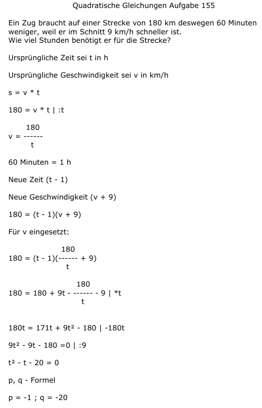

Aufgabe 155 Ein Zug braucht auf einer Strecke von 180 km deswegen 60 Minuten weniger, weil er im Schnitt 9 km/h schneller ist. Wie viel Stunden benötigt er für die Strecke? Ursprüngliche Zeit sei t in h Ursprüngliche Geschwindigkeit sei v in km/h s = v * t 180 = v * t | :t 180 v = ------ t 60 Minuten = 1 h Neue Zeit (t - 1) Neue Geschwindigkeit (v + 9) 180 = (t - 1)(v + 9) Für v eingesetzt: 180 180 = (t - 1)(----- + 9) t 180 180 = 180 + 9t - ----- - 9 | *t t 180t = 171t + 9t2 - 180 |-180t 9t2 - 9t - 180 =0 | :9 t2 - t - 20 = 0 p, q - Formel p = -1 ; q = -20  t1,2 = 0,5 ± 4,5 t1 = 0,5 + 4,5 = 5 h brauchte der Zug ursprünglich Er braucht jetzt 5 h - 1 h = 4 h t1 = 0,5 - 4,5 = -4 keine Lösung, negative Zeit